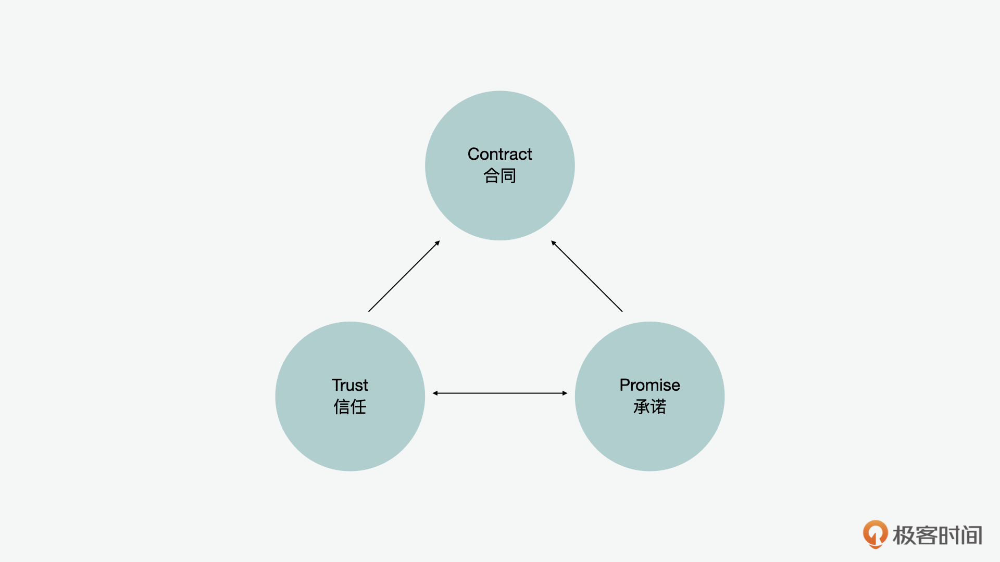
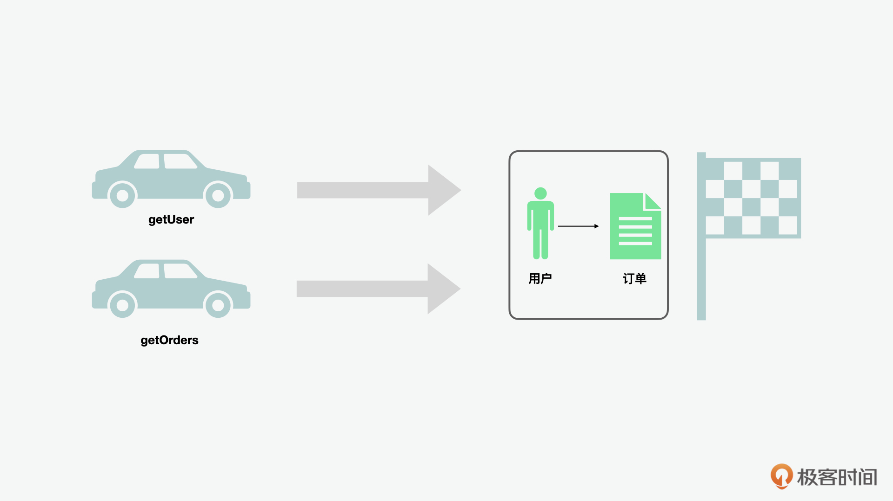
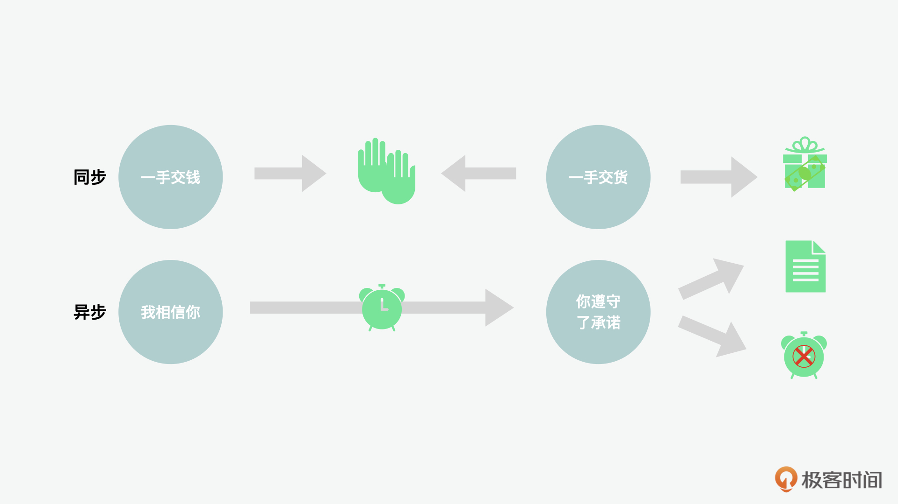
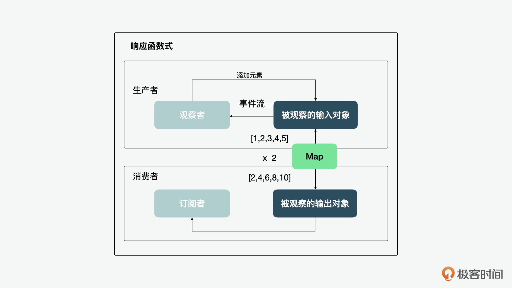
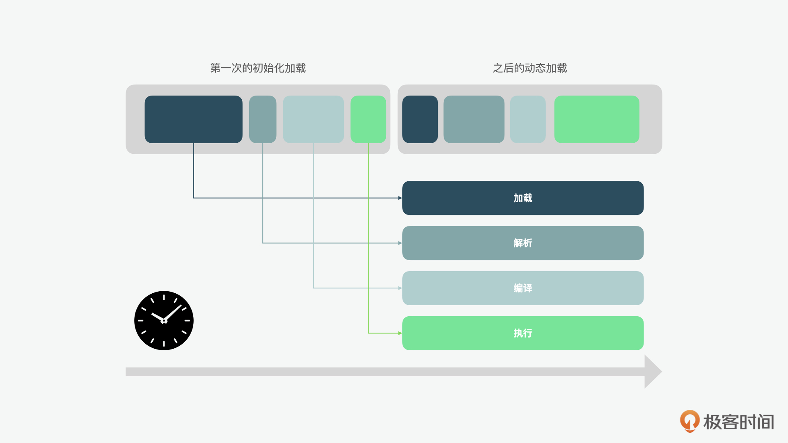
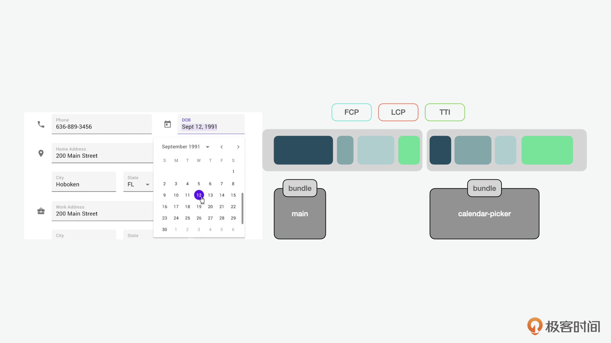
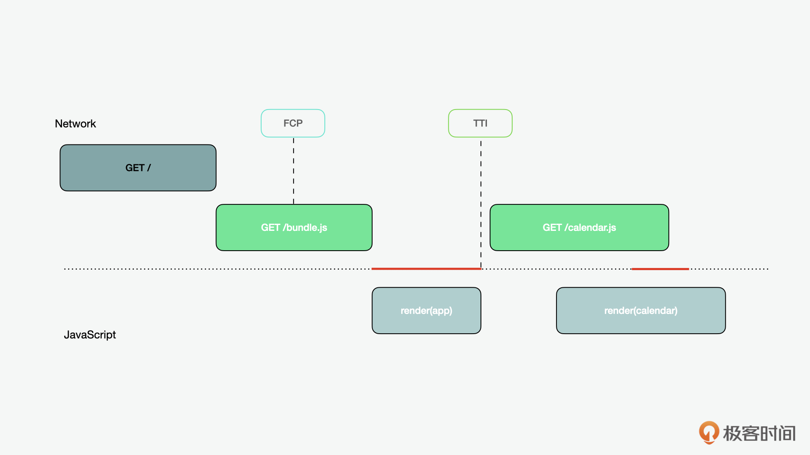
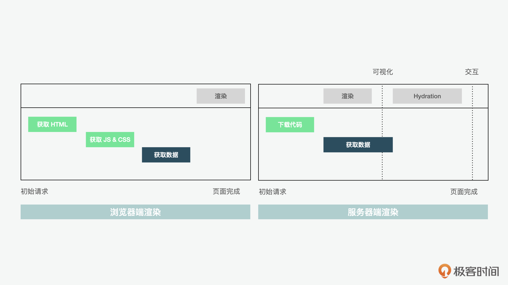
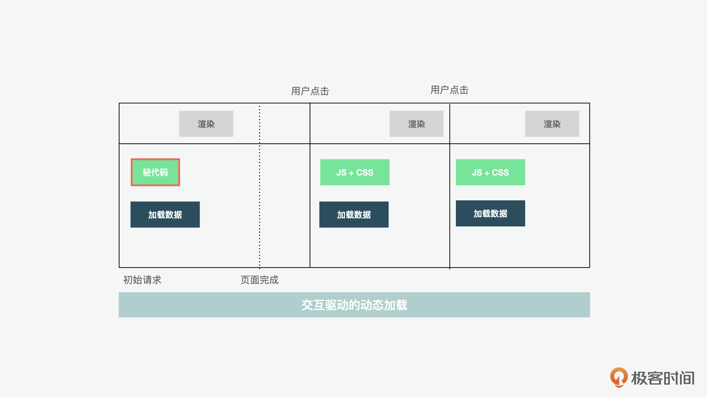

- 00 开篇词 JavaScript的进阶之路.md.html
- 01 函数式vs.面向对象：响应未知和不确定.md.html
- 02 如何通过闭包对象管理程序中状态的变化？.md.html
- 03 如何通过部分应用和柯里化让函数具象化？.md.html
- 04 如何通过组合、管道和reducer让函数抽象化？.md.html
- 05 map、reduce和monad如何围绕值进行操作？.md.html
- 06 如何通过模块化、异步和观察做到动态加载？.md.html
- 07 深入理解对象的私有和静态属性.md.html
- 08 深入理解继承、Delegation和组合.md.html
- 09 面向对象：通过词法作用域和调用点理解this绑定.md.html
- 10 JS有哪8种数据类型，你需要注意什么？.md.html
- 11 通过JS引擎的堆栈了解闭包原理.md.html
- 12 JS语义分析该用迭代还是递归？.md.html
- 13 JS引擎如何实现数组的稳定排序？.md.html
- 14 通过SparkPlug深入了解调用栈.md.html
- 15 如何通过哈希查找JS对象内存地址？.md.html
- 16 为什么环形队列适合做Node数据流缓存？.md.html
- 17 如何通过链表做LRU_LFU缓存？.md.html
- 18 TurboFan如何用图做JS编译优化？.md.html
- 19 通过树和图看如何在无序中找到路径和秩序.md.html
- 20 算法思想：JS中分治、贪心、回溯和动态规划.md.html
- 21 创建型：为什么说Redux可以替代单例状态管理.md.html
- 22 结构型：Vue.js如何通过代理实现响应式编程.md.html
- 23 结构型：通过jQuery看结构型模式.md.html
- 24 行为型：通过观察者、迭代器模式看JS异步回调.md.html
- 25 行为型：模版、策略和状态模式有什么区别？.md.html
- 26 特殊型：前端有哪些处理加载和渲染的特殊“模式”？.md.html
- 27 性能：如何理解JavaScript中的并行、并发？（上）.md.html
- 28 性能：如何理解JavaScript中的并行、并发？（下）.md.html
- 29 性能：通过Orinoco、Jank Busters看垃圾回收.md.html
- 30 网络：从HTTP_1到HTTP_3，你都需要了解什么？.md.html
- 31 安全：JS代码和程序都需要注意哪些安全问题？.md.html
- 32 测试（一）：开发到重构中的测试.md.html
- 33 测试（二）：功能性测试.md.html
- 34 测试（三）：非功能性测试.md.html
- 35 静态类型检查：ESLint语法规则和代码风格的检查.md.html
- 36 Flow：通过Flow类看JS的类型检查.md.html
- 37 包管理和分发：通过NPM做包的管理和分发.md.html
- 38 编译和打包：通过Webpack、Babel做编译和打包.md.html
- 39 语法扩展：通过JSX来做语法扩展.md.html
- 40 Polyfill：通过Polyfill让浏览器提供原生支持.md.html
- 41 微前端：从MVC贫血模式到DDD充血模式.md.html
- 42 大前端：通过一云多端搭建跨PC_移动的平台应用.md.html
- 43 元编程：通过Proxies和Reflect赋能元编程.md.html
- 结束语 JavaScript的未来之路：源于一个以终为始的初心.md.html
- 捐赠
06 如何通过模块化、异步和观察做到动态加载？
你好，我是石川。
在前面几节讲函数式编程的课程里，我们了解了在函数式编程中副作用通常是来自于函数外部，多在输入的过程中会出现副作用。这实际上是从空间的角度来看的。
而今天这节课，我们会从时间的角度来看看异步中的事件如何能引起副作用，以及要如何管理这种副作用。
如何处理异步事件中的时间状态？
实际上，在函数式编程中我们在讨论异步的时候，经常会说到信任（trustable）和承诺（promise）。这个其实是源自于合同或者是契约法中的一个概念，而且它不只限于经典的合同，我们说的智能合约之类的概念中，底层逻辑也都源于契约和共识。
那么，为什么我们在处理异步时需要用到这个概念呢？下面我就先带你来看看在异步时，程序都会遇到哪些问题。

假设，我们有以下getUser和getOrders两个函数，分别通过用户ID来获取用户信息和订单信息。如果getUser先得到响应的话，那么它就没法获得订单信息。同样地，如果getOrders先得到响应的话，那么它就没办法获得用户信息。
这样一来，我们说这两个函数就形成了一个竞争条件（Race Condition）。
var user;
getUser( userId, function onUser(userProfile){
var orders = user ? user.orders : null;
user = userProfile;
if (orders) {
user.orders = orders;
}
} );
getOrders( userId, function onOrders(userOrders){
if (!user) {
user = {};
}
user.orders = userOrders;
} );
从下图也可以看出，无论是谁先到达都会出现问题。那么你可能会说，把它们一前一后分开处理不就行了吗？但是这样的话就没有办法做到并行，只能串行，而串行所花的总时间一般会高于并行。

在这里，时间就是状态。在同步操作中我们不需要考虑时间；而在异步中时间就产生了。时间不仅仅是状态，也是最难管理的状态。
这和信任和承诺又有什么关系呢？因为信任和承诺之间隔着的就是时间！还是以合同交易举例，如果是同步的话，相当于一手交钱、一手交货。而在异步中，则只能靠时间证明是否遵守了承诺。所以在JavaScript里，解决异步问题的工具就叫承诺（promise）。

可是，凭什么我们要相信一个承诺呢？在生活中的交易，大家通常会走个合同，剩下的交给时间来证明。而在JavaScript函数式编程当中，解决方案就是不用合同这么麻烦了，为了让你相信我的承诺，咱们干脆直接把时间给干掉。
是的，就是这么霸气。把时间干掉的方式就是按照同步的方式来处理异步，下面是一个例子：
var userPromise = getUser( userId );
var ordersPromise = getOrders( userId );
userPromise.then( function onUser(user){
ordersPromise.then( function onOrders(orders){
user.orders = orders;
} );
} );
这样，即使是并行获取的用户和订单信息，在处理的时候我们也可以通过then按照同步处理时的先后顺序，来更新订单信息到用户对象上。
如何处理循环事件中的时间状态？
在函数式+响应式编程中，除了网络事件，还有更多的例子是通过去掉时间，比如循环或用户事件，都可以用类似同步的方式来处理异步事件。
举个例子，比如我们有生产者和消费者两个对象，消费者希望在生产者发生改变的时候，能随之映射出改变。这时候如果我们的生产者很“勤奋”，实时地在生产，消费者也可以实时地来消费。
// 勤奋生产者
var producer = [1,2,3,4,5];
// 消费者
var consumer = producer.map( function triple(v){
return v * 3;
} ); // [3,6,9,12,15];
但是如果有一个懒惰的生产者，消费者不知道在未来哪个时间该生产者会发生变化，那么要怎么办呢？
这时，我们就需要把懒惰的生产者当做一个被观察对象，每当它发生变化时，就随之做出反应，这就是“函数式中的异步模式”和“响应式中的观察者模式”的结合。

下面是一个相对抽象的异步循环事件的例子。不过在现实当中，我们遇到的用户输入，比如鼠标的点击、键盘的输入等等的DOM事件也是异步的。所以这个时候，我们就可以用到“懒”这个概念，根据用户反应来“懒加载”一些内容。
/* 例如使用RxJS，一个响应式JS的扩展 */
// 懒惰生产者
var producer = Rx.Observable.create( function onObserve(observer){
setInterval( function everySecond(){
observer.next( Math.random() );
}, 1000 );
} );
// 消费者
var consumer = producer.map( function triple(v){
return v * 3;
} );
consumer.subscribe( function onValue(v){
console.log( v );
} );
如何处理用户事件中的时间状态？
接着我们再从响应式和观察者模式延伸，来看看前端在处理页面上内容的动态加载时使用的一些方法。这就要说到动态导入了。
我们先来看看网页上的一个模块从加载到执行的顺序。可以看到，这个顺序大致分成了4个步骤，第一是加载，之后是解析、编译，最后是执行。如果是动态加载，就是在初始化之后，根据需求再继续加载。

而说到动态导入，基本可以分成两类，一类是可视时加载（load on visibility），一种是交互时加载（load on interaction）。
可视时加载就是我们经常说的懒加载（Lazy loading），这种方式经常用在长页面当中。比如产品详情页，一般都是用讲故事的方式一步步介绍产品卖点，用图说话，最后再展示参数、一键购买以及加购物车的部分。所以也就是说我们不需要一上来就加载整个页面，而是当用户滑动到了某个部分的时候，再加载相关的内容。
交互时加载就是当用户和页面进行交互时，比如点击了某个按钮后，可能产生的加载。举个例子，有些应用中的日历，只有用户在进行特定操作的时候才会显示并且和用户交互。这样的模块，我们就可以考虑动态加载。
注意，这里有几个重要的指标。在初始化的加载中，我们关注的通常是首次渲染时间（FCP，First Contentful Paint）和最大内容渲染时间（LCP，Largest Contentful Paint），也就是页面首次加载的时候。在后续的动态加载中，我们关注的是首次交互时间（TTI，Time to Interactive），也就是当用户开始从首屏开始往下滑动，或者点击了某个按钮开启了日历弹窗的时候。

你可能会觉得，这样的优化只能省下一两百KB或几个MB，是否值得？但是苍蝇腿也是肉，而且积少成多，当你在开发一个复杂的Web应用需要不断扩充模块的时候，这样的操作可能就会产生质和量上的变化。
然后在这个时候，我们通常会通过一些打包工具，比如用Webpack先加载核心的组件，渲染主程序，之后根据交互的需要，按需加载某个模块。
另外，对于动态的加载，其实也有很多三方的库可以支持，其中一个例子就是React中的Suspense。如果是Node服务器端的加载渲染的话，也有Loadable Components这样的库可以用来参考。当然，如果你不使用这些三方的库，自己开发也可以，但是原理始终是类似的。

不过这里我还想说下，在使用动态导入前，一般应该先考虑预加载（pre-load）或预获取（pre-fetch）。
它们两个的区别是，前者是在页面开始加载时就提前开始加载后面需要用到的元素；后者是在页面的主要功能都加载完成后，再提前加载后面需要用到的素材。除非没法做到预加载和预获取，或者你加载的是三方的内容，不可控，不然的话，这些方式都可以带来比动态加载更好的用户体验。
那么，有没有没法儿做到、或者不适合做预加载的例子呢？也是有的，比如要预加载的内容过大，而且用户不一定会使用预加载的内容的时候。
这个时候如果你事先加载，一是会使用到用户的网络，占用了用户手机的存储空间；二是也会增加自己的CDN和服务器的资源消耗。这种情况下，就要用到动态加载了。
另外在进一步看动态加载前，我们还要了解两个基础概念，就是页面渲染的两种基础渲染模式。一种是浏览器渲染，一种是服务器端渲染。
首先，在客户端渲染（CSR，client side rendering）模式下，我们是先下载HTML、JS和CSS，包括数据，所有的内容都下载完成，然后再开始渲染。
而SSR服务器端渲染（SSR，server side rendering）模式下，我们是先让用户能看到一个完整的页面，但是无法交互。只有等相关数据从服务器端加载和hydrate后，比如说一个按钮加上了的相关事件处理之后，才能交互。
这个方案看上去比CSR会好一些，但它也不是没有问题的。比如说，我们作为用户使用一些应用有时候，也会遇到类似的问题，就是我们在加载和hydrate前点击某个按钮的时候，就会发现某个组件没反应。

那么在交互驱动的动态加载中，上面这种问题怎么解决呢？比如Google，他们会使用并且开源了一个叫JSAction 的小工具，它的作用就是先加载一部分轻代码（tiny code），这部分代码可以“记住”用户的行为，然后根据用户的交互来加载组件，等加载完成再让组件执行之前“记住”的用户请求。这样就完美解决了上述问题。

总结
通过今天的学习，我们理解了函数式编程+响应式编程中，时间是一个状态，而且是一个最难管理的状态。而通过promise的概念我们可以消除时间，并且可以通过同步的方式来处理异步事件。
另外，通过观察者模式我们也可以更好地应对未知，通过行动来感知和响应，这样的加载方式，在应用的使用者达到一定规模化的时候，可以减少不必要和大量的资源浪费。
思考题
我们说根据事件的动态加载可以起到降本增效的作用，那么你能说说你在前端开发中做资源加载设计、分析和优化的经验吗？
欢迎在留言区分享你的答案、交流学习心得或者提出问题，如果觉得有收获，也欢迎你把今天的内容分享给更多的朋友。
© 2019 - 2023 Liangliang Lee. Powered by gin and hexo-theme-book.